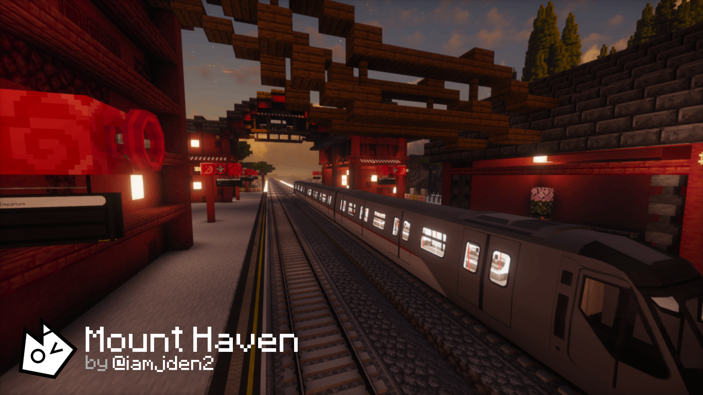
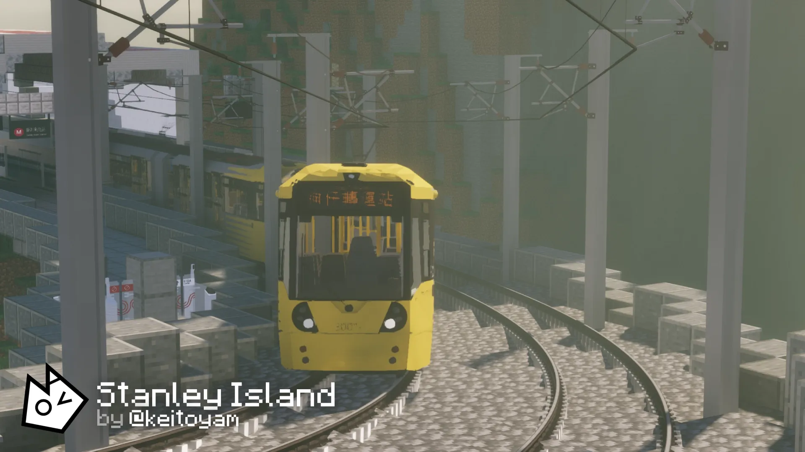
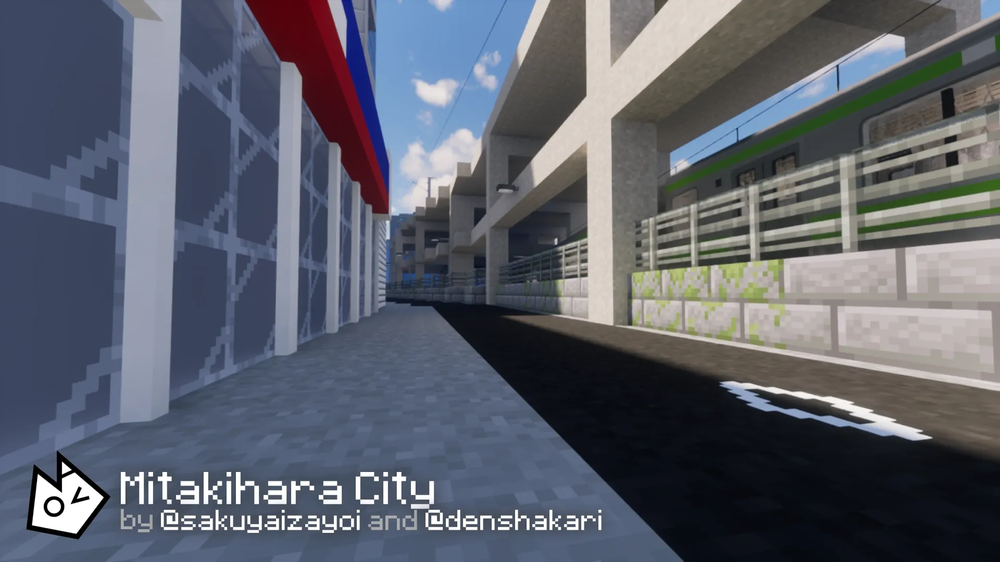
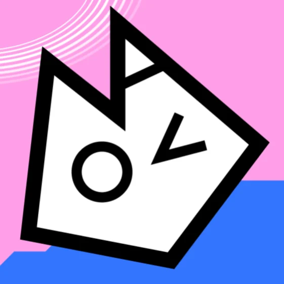

A community‑driven Minecraft Transit Railway server built on creativity, personality, and a shared love for transit.
NovaMTR (NMTR) is a Minecraft Transit Railway–based server owned by Quanti and hosted by AwesomeKalin55. The server focuses on fun, creativity, and community expression, offering a unique experience compared to traditional MTR servers.

NovaMTR was founded on July 4th 2025 after discussions between Quanti, AwesomeKalin55, and Curt about creating a new MTR server with a more enjoyable and welcoming atmosphere.
The server opened to the public on July 9th 2025. Early builders included Dusbrio, Lewi, and Mahmoud, while the first administrative team consisted of Quanti, AwesomeKalin55, Curt, Baykie (formerly AnomalousBacon), and Foxball.

Early plans included weekly community events, with Gartic Phone being the only one that launched.
Several downtimes occurred due to file changes made by Curt, often causing temporary panic until AwesomeKalin55 restored the server. Currently, there is one ongoing.
In September 2025, multiple channels were created and @everyone was spammed, leading to internal staff discussions and the temporary resignation of VSad.
In October 2025, a build test misunderstanding by Curt led to criticism and a temporary departure of PixellatedLevis. The staff team later apologised, and Levis returned.
On February 7th 2026, a chunk pruning operation removed several built areas. A rollback was planned, though the server entered a temporary hiatus.
In January/February 2026, an unexpected server downtime occurred. A week later, another outage occurred, this time with some stations being accidentally pruned due to world size. This is related to the Pruned Chunks Incident.
On February 12th 2026, a disagreement regarding platform allocation led to a heated exchange. Staff intervened and resolved the situation through discussion.

NovaMTR now has over 200 members, more than 35 builders, and 10 staff members. The network spans over 200 km, making it one of the fastest‑growing and most successful MTR servers.
NovaMTR is known for its energetic and expressive community. Moderation is relaxed but firm on key rules, especially regarding the use of artificial intelligence. The server is LGBTQ+ friendly and aims to provide a safe, welcoming environment for all players.
NovaMTR’s mascot is the NovaKitty — an abstract, stylised cat head that spells “NOVA.” The NovaKitty appears in emojis, stickers, and server branding.

The Official NovaMTR Logo
While formal reviews are not avaliable, community members consistently describe NovaMTR as a fun, creative, and diverse server with a wide range of building styles and personalities.
Server Creation: Quanti
Server Management: AwesomeKalin55
Moderation: Rewcat, Curt, Sakuya, Mahmoud, Pinkcarb, Foxball, Quanti, Baykie
Notable Builders (or Network Planners): Kay, Iamjden2, Sakuya, Nobody, KangreLeo, Jelly&Jack, Rewcat, Kangre, Foxball, Kraka, Baykie, Quanti
Website Creator: Pinkcarb